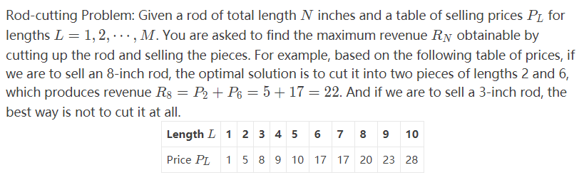
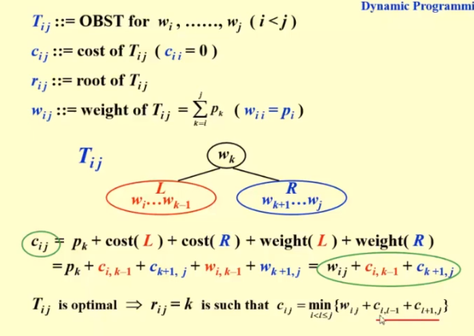

dynamic programming
介绍
有些问题，我们用递归来做，如斐波那契列。但是，在递归过程中，很多步骤是重复的，并且，这可能占据了很大一部分，就很浪费时间。动态规划，将所有的步骤，中间计算结果，都存储了，只需要计算一次，不会重复。
它和分治法有点像。不同的是，它是自底向上的，我们已经明确并最小规模的问题是什么东西了并且直接从最小的规模的那一群东西开始做。是按照k来划分阶段（或者说，不同的规模），总之，就是从最小的规模开始计算最优解，并且保存到一张表里面。
自下而上的计算，需要状态转移方程，即$f(k+1) = S(f(i)),\ where\ i\ge 0\ and\ i\le\ k $
下一阶段的目标量和之前的量的关系
动态规划，或者更应该叫做动态填表法
例子
分杆问题

- 暴力搜索$O(2^N)$，不解释
- 传统递归 $O(2^N)$
- dp $O(N^2)$，如下所示
1 | for i in 1 to n: |
optimal binary search tree
- 静态查找（没有插入和删除）的最佳方式
引入
考虑一些有概率（权重）的节点
$w_i\ and\ p_i $
$And\ we \ can\ easily\ get\ T(N)=\sum_{i=1}^Np_i*(1+d_i) $
现在我们尝试使得T(N)达到最小。
实现

- 对于任意一个序列，我们都选一个作为分割点，总之就是三部分，分割点以及分出来的两个更小序列。直到序列可以直接出答案（只有一个节点）
- 左右子树上的需要在计算cost的时候加上一层深度，意味着每一个节点的概率值得加一遍，也就是这棵子树的总权重。
All pairs shortest path
我们依次考察k个点，k从0（第一个点）开始增加，一直到N-1（全部点）为止，那就考虑了所有点。
1 | void AllPairs( TwoDimArray A, TwoDimArray D, int N ) |
总结
关于dp与分治
dp也是在做和分治类似的穷举，只是有了存储状态的表，所以避免了重复计算，用空间换取了时间。
递归+记忆化搜索 是一种自上而下的dp
其实所有的dp都可以用递归来做
dp是一种自下而上的解法，直接从直接解决的小规模的最优解出发，不断推往下一阶段，逐步填充状态表。
设计dp
- 识别是否是一个dp问题
- 子问题存在重叠，有重复计算的部分，否则没意义
- 存在依赖性，当前阶段的最优解依赖于前面各阶段的最优解
- 定义最优化解的值，抽象状态转移方程
- 自下而上计算
- 重构
Hope you like this blog or find it useful for you!If the images or something else used in the blog infringe your copyright, please contact the author to delete them. Thank you !